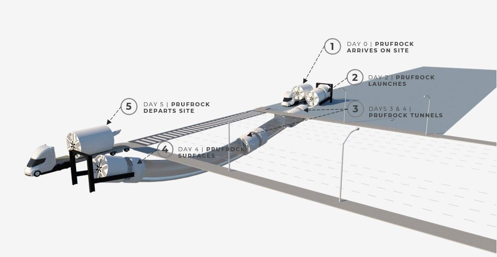

prufrock
Designed to construct mega-infrastructure projects in a matter of weeks instead of years
Designed to construct mega-infrastructure projects in a matter of weeks instead of years
Prufrock is designed to “porpoise,” meaning it launches directly from the surface, mines underground, and re-emerges upon completion. This allows Prufrock to begin tunneling within 48 hours of arrival onsite and eliminates the need to excavate expensive pits to launch and retrieve the machine.
Prufrock is designed to tunnel at a speed greater than 1 mile per week, which is 6 times faster than The Boring Company's previous generation TBM (Godot+). This is still 4-5 times slower than a garden snail...but Prufrock is catching up!
Prufrock’s medium-term goal is to exceed 1/10 of human walking speed, which is 7 miles per day.
Example Pedestrian Tunnel Project
Tripling TBM Power: increase power while improving cooling systems (more power = more speed)
Continuous Mining: installing the tunnel’s precast segments simultaneously with mining eliminates the need to stop the TBM every five feet (these stoppages are standard on soft-soil TBMs)
Surface Launch and Porpoising: Prufrock arrives on a truck, tilts down, and mines within 48 hours
Eliminating Rail: utilizing rubber-wheeled segment trucks instead of traditional rail-based locomotives eliminates the time-consuming rail installation and maintenance
Vertical Integration: producing TBMs, construction vehicles, and precast concrete lining in-house allowing rapid iteration
Tunnel Size Reduction & Standardization: reducing the tunnel diameter to 12 feet (30% - 60% reduction), maintaining the same tunnel diameter for all projects in order to avoid "reinventing the wheel" each time TBC designs a project and construction process
All-Electric Approach: tunnel construction with all-electric tunneling equipment, liner truck included; results in a cleaner tunnel with simpler ventilation requirements due to the lack of diesel fumes